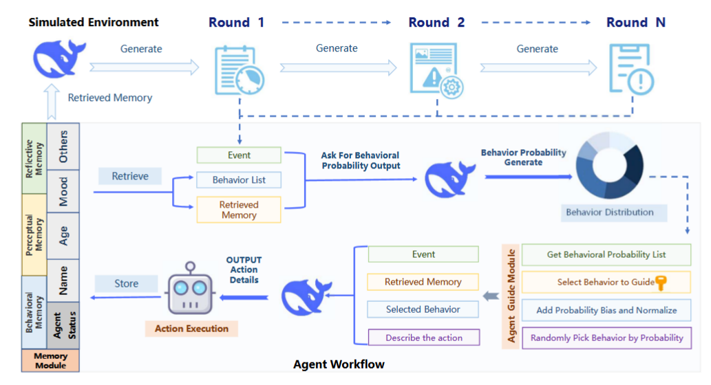

Literature Review: Agent Guide: A Simple Agent Behavioral Watermarking Framework
Summary
-
Motivation:
The proliferation of intelligent agents powered by large language models (LLMs) in digital ecosystems (i.e., social media) raises concerns about traceability and accountability, especially for cybersecurity and copyright protection. Traditional watermarking methods, which operate at the token/content level, are inadequate for agent behaviors due to the challenges of behavior tokenization and information loss during translation from behavior to action. -
Key Idea:
The paper introduces Agent Guide, a novel behavioral watermarking framework that embeds watermarks at the behavior level (i.e. the decision to bookmark or like), not at the content/action level (i.e. the specific tags used when bookmarking). Watermarks are embedded by biasing the probability distribution over high-level behaviors using a secret key, while the naturalness of specific actions is preserved. -
Technical Approach:
- Behavior-Action Decoupling: Agent Guide separates agent operation into two levels:
- Behavior: High-level decision (i.e. bookmark, like, share)
- Action: Specific execution (i.e. bookmark with tag #TravelInspiration)
- Watermark Embedding:
- In each round, the agent generates a probability distribution over possible behaviors.
- A subset of behaviors is selected based on a secret key and round number.
- Probabilities of these behaviors are increased by a bias factor, then normalized.
- The agent samples its next behavior from this biased distribution, embedding the watermark over multiple rounds.
- Detection:
- Watermark detection uses a z-statistic to test if the agent’s behavior distribution is significantly biased toward the watermarked subset, compared to a non-watermarked agent.
- Detection is robust over multiple rounds and does not rely on the content of specific actions.
- Behavior-Action Decoupling: Agent Guide separates agent operation into two levels:
-
Experimental Validation:
- Simulated social media scenario with agents of varying activity (Active/Inactive) and mood (Calm/Joyful/Sad).
- Six agent profiles, each interacting for 50 rounds.
- Watermarked agents consistently produced z-statistics well above the detection threshold (τ=2), while non-watermarked agents remained below, resulting in a low false positive rate (<5%).
- The framework is robust across agent activity and mood, showing minimal performance variation.
-
Applications:
- Identifying malicious agents (i.e. bots spreading disinformation).
- Protecting proprietary agent systems and enforcing copyright.
- Enabling compliance and traceability in regulated industries.
-
Limitations & Future Work:
- The naturalness of actions is presumed but not user-validated.
- Applicability to domains beyond social media (i.e. finance, healthcare) is suggested but untested.
- Adversarial robustness and further security analysis are proposed for future research.
Figures

Figure 1: The workflow of Agent Guide. The agent retrieves memory and a behavior list, generates behavior probabilities, applies watermark-guided biases, selects a behavior, executes an action, and updates memory. This process repeats over multiple rounds, embedding the watermark in behavioral patterns.
Ratings
| Category | Rating (out of 5) | Comments |
|---|---|---|
| Novelty | 4 | Addresses new gap in agent traceability and security. Decoupling behavior and action for watermarking is a new contribution. |
| Technical Contribution | 3.5 | Presents a mathematically sound watermarking and detection method (probability biasing, z-statistics), with a clear algorithm and experimental validation. |
| Readability | 3.5 | Well-structured, with clear motivation, methodology, and experiments. Includes figures and tables. Some technical sections (i.e. mathematical formalism) was a little dense, but overall explanations are accessible. |
Enjoy Reading This Article?
Here are some more articles you might like to read next: